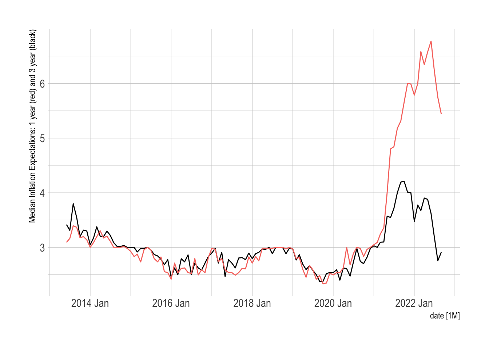
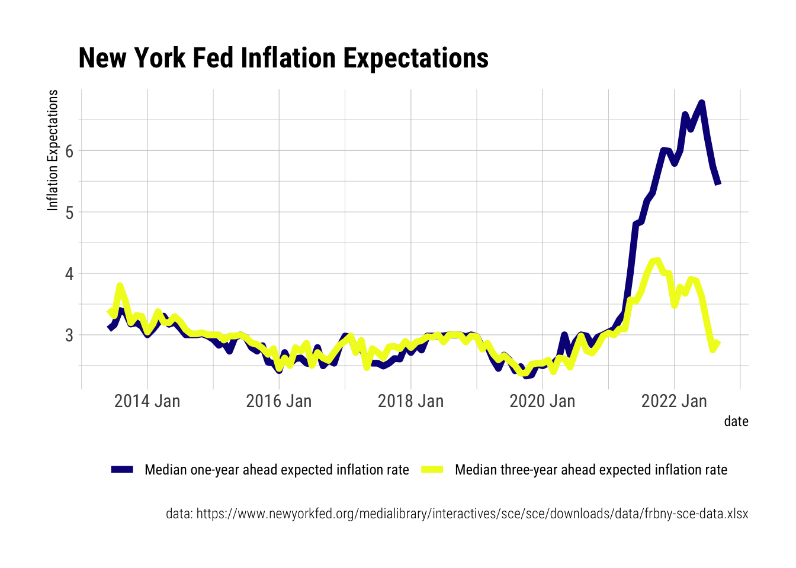
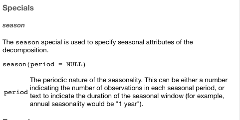
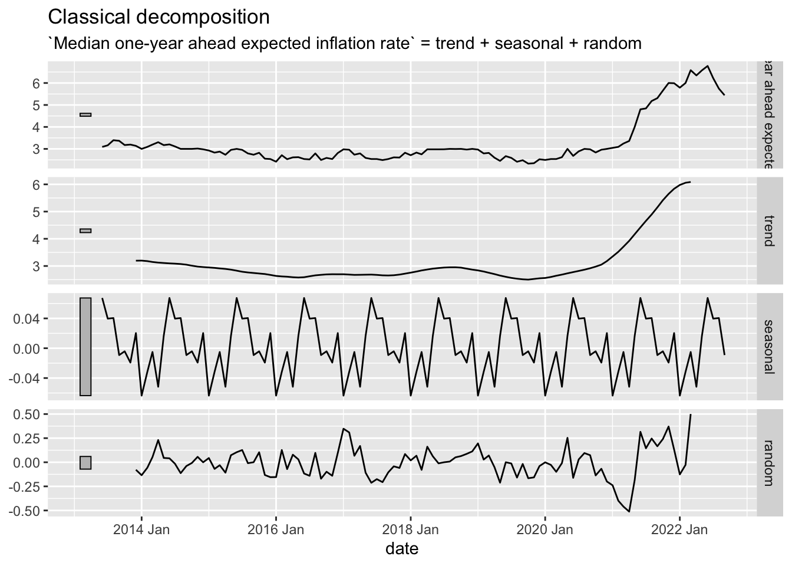
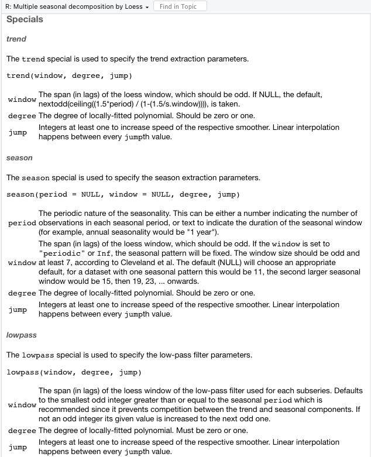
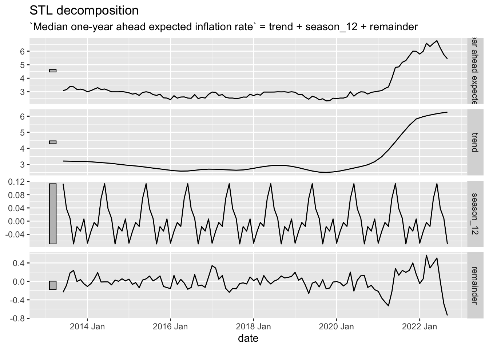

```{r}
load(url("https://github.com/robertwwalker/xaringan/raw/master/CMF-Week-9/data/FullWorkspace.RData"))
```The slides are here..
Our tenth class meeting will focus on Chapter 5 and Chapter 6 of Forecasting: Principles and Practice [3rd edition].
All of the data for today and for last time, including computations, can be acquired using
and
```{r}
load(url("https://github.com/robertwwalker/ChoiceAndForecasting/raw/main/posts/week-10/data/Week-10.RData"))
```Inflation Expectations
The Federal Reserve Bank of New York collects data on inflation expectations that are interesting to examine. As a part of the Survey of Consumer Expectations, these highlight consumers expected levels of inflation though the five-year expectations have only become a part of the series for 2022, more about this here that includes a bit of summary on the data. While consumers are probably not experts, it is important to note how expectations are anchored and also that question wording seems to matter, see de Bruin and van der Klaauw 2012.
```{r}
library(tidyverse)
library(lubridate); library(tsibble)
library(readxl)
url <- "https://www.newyorkfed.org/medialibrary/interactives/sce/sce/downloads/data/frbny-sce-data.xls"
destfile <- "frbny_sce_data.xls"
curl::curl_download(url, destfile)
Inflation.Expectations <- read_excel(destfile, sheet=4, skip=3) %>%
rename(date = 1) %>%
mutate(date = yearmonth(parse_date_time(date, orders = "%Y%m")))
``````{r}
library(fpp3)
Inflation.Expectations %>%
as_tsibble(index=date) %>%
autoplot(`Median three-year ahead expected inflation rate`) +
geom_line(aes(y=Inflation.Expectations$`Median one-year ahead expected inflation rate`, color="red")) +
hrbrthemes::theme_ipsum() + guides(color = "none") + labs(y="Median Inflation Expectations: 1 year (red) and 3 year (black)")
```
A nicer plot.
```{r}
Inflation.Expectations %>%
select(1:3) %>%
pivot_longer(c(2:3)) %>%
mutate(Variable = name) %>%
ggplot(aes(x=date, y=value, color=Variable)) +
geom_line(size=2) +
scale_color_viridis_d(option="C") +
hrbrthemes::theme_ipsum_rc() +
theme(legend.position = "bottom") +
labs(y="Inflation Expectations",
color="",
title="New York Fed Inflation Expectations",
caption = "data: https://www.newyorkfed.org/medialibrary/interactives/sce/sce/downloads/data/frbny-sce-data.xlsx")
```
Decompositions
Classical Decomposition
The key difference between the two decompositions, and there are others, is the existence [or lack thereof] of a window. In the classical decomposition, there is almost no flexibility. The flexibility is defined by the Specials. In this case, there is only one and it is the seasonal period [so there are basically none].

```{r}
Inflation.Expectations %>%
as_tsibble(index=date) %>%
model(stl = classical_decomposition(`Median one-year ahead expected inflation rate` ~ season(12))) %>%
components() %>%
autoplot()
```
STL Decomposition
The key new element to the STL decomposition is the window argument. Over how many time periods should the trend/season be calculated. If one wishes to average over all periods, window="periodic" is the necessary syntax. For the STL decomposition, there are quite a few.

Season and trend are fairly intuitive. The lowpass filter, less so. First, the subseries is the individual seasonal period; in this case, there are 12 subseries because we have monthly data.
```{r}
Inflation.Expectations %>%
as_tsibble(index=date) %>%
model(STL(`Median one-year ahead expected inflation rate` ~ season(12, window = "periodic"))) %>%
components() %>%
autoplot()
```
Principal Components
One way of deploying the full set of features is to utilize principal components on them to determine which series are most alike in relation to the others. Let’s try this with the employment data.
First, let me take the version of the updated employment data and subject them to the full set of features.
```{r}
employment_features <- US.Employment.T %>%
features(Employed, feature_set(pkgs = "feasts"))
```Next, I want to take the features and subject them to principal components. There is one issue in doing this, to scale them, we will need to find the column(s) that have no implicit variation. Though there are 49 columns to the features, there are only 43 remaining columns after removing those with no variation. The apply part goes through and omits columns with zero variance. The 2 applies the function to columns and only keeps those with non-zero variance.
```{r}
# Clean up
EF <- employment_features %>% select(-Title) %>% .[,apply(., 2, var, na.rm=TRUE) != 0]
ncol(employment_features)
ncol(EF)
```[1] 49
[1] 43Now to the scaling.
```{r}
library(broom)
pcs <- EF %>%
prcomp(scale=TRUE) %>%
augment(EF)
pcs$Title <- employment_features$Title
```Then I want to plot them. Unlike the example in the text, these do not have numerous categorical identifiers, I will use a plotly to get the titles of the series as the identifier to explore.
```{r}
plot1 <- pcs %>%
ggplot(aes(x = .fittedPC1, y = .fittedPC2, label = Title)) +
geom_point() +
theme_minimal()
library(plotly)
ggplotly(plot1)
```The common question exposed by principal components is expressed here. What are these components actually measuring? That is largely unknown except that the first principal component is the strongest axis of differentiation for the data. But what features are included in it? That is black boxed.